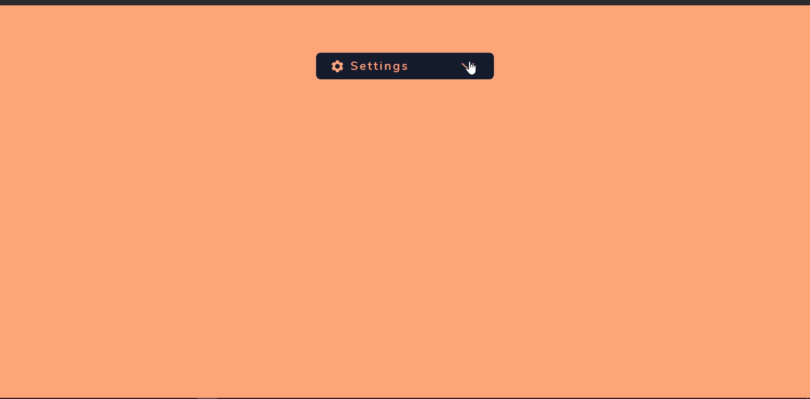

Mini Retos para Intentar
Cambiar de área de conocimiento no siempre es sencillo, salir de la zona de confort no resulta un paso fácil. Este es mi caso, soy arquitecto de profesión, pero con ganas de trabajar en tecnología.
Cuando das tus primeros pasos en programación puede ser abrumador, Backend, Frontend, Base de Datos, PHP, JavaScript, Dockers, DevOps y otros términos que parecerían imposibles de entender. Tranquilo solo respira y sigue leyendo.
Decidir que aprender de primero puede ser una decisión difícil, en mi caso decidí aprender sobre desarrollo web y en paralelo ir tomando cursos y clases sobre fundamentos de programación, necesario cuando solo conoces lo básico de computadoras.
Esta decisión se basa en la cercanía que tengo con el diseño, un área que se me hace más familiar , esto me llevo a aprender lenguajes como HTML y CSS para pintar en el navegador y poder visualizar lo que voy creando, sin embargo, esto no es suficiente para realizar funcionalidades con las que interactuamos en nuestras aplicaciones favoritas, así que era necesario aprender JavaScript(JS), un lenguaje de programación que te permite interactuar con el navegador, el cliente y poder darle más dinamismo a tus aplicaciones web.
Claro, aprender JavaScript puede ser una tarea larga y un poco frustrante, así que luego de varios cursos, mucha practica y más errores, decidí realizar ciertos retos que permitan poner en práctica los conocimientos que he ido adquiriendo. Y es esto lo que te quiero compartir.
Mi intención es ir poniendo en práctica HTML, CSS y JS a través de pequeñas aplicaciones, porque conozco lo frustrante que puede ser querer realizar una aplicación compleja. Entonces apliquemos “Divide y vencerás”, con pequeñas piedras se construyen grandes caminos.
Haremos esto juntos, con cada reto aprenderemos nuevas cosas, que pueden parecer pequeñas pero con la combinación de todas puedes hacer el siguiente Google, bueno espera un poco, primero aprendamos a hacer una calculadora.
El primer reto será realizar un DropDown.
Aquí el resultado final:
Me gustaría aclarar que no soy experto, compartiré mi forma de hacerlo, seguro existen formas más optimas, si me las muestras seria genial.
Ahora el Código HTML:
Como verán, es un HTML sencillo, donde tengo un contenedor, y dentro de este se encuentra el menú.
Aquí lo que hice fue hacer un contenedor, el cual tendría dos DIV, uno que contiene el botón para desplegar el menú y el otro el menú a desplegar. Con esto logramos manejar todo desde el contenedor del DropMenu y el Settings, y hacer un poco más legible el código.
En el CSS para hacer que el menú este por default oculto uso una Opacity = 0 y aparte creo otra clase con Opacity = 1 , que será agregada de manera dinámica en JS, estas mismas clases contiene la parte de transiciones, para hacer más elegante el despliegue.
Ya luego de tener el HTML y CSS, usamos JS para darle dinamismo.
El código en JS es muy sencillo, usamos las constantes, BUTTON para el botón del menú, DROPMENU que será el menú a desplegar y ARROW que girara el indicador cuando el menu esta desplegado y cuando no.
Ya con esto realizamos una simple función, donde a los elementos HTML anteriormente mencionados, le agregamos o quitamos las clases auxiliares que creamos en el CSS.
Aquí usamos una propiedad de JS que es Element.classList.toggle, que nos permite revisar si una clase esta aplicada a nuestro elemento e intercambiar entre estas.
En nuestro caso, agregamos las clases Show__menu y After, las cuales desplegarán el menú, y rotarán nuestra flecha.
Por otro lado, uso una función de JS preventDefault(), para eliminar la recarga al hacer clic sobre el botón de Settings, y así seguir con el flujo del programa.
Ojalá este mini tutorial sea de tu agrado, y puedas comentar otras maneras de realizar lo mismo, o como incluso mejoraría el código.
Puedes revisar el código completo en el repositorio de GitHub: https://github.com/KrlosAren/Make-Simple/tree/master/00_Settings